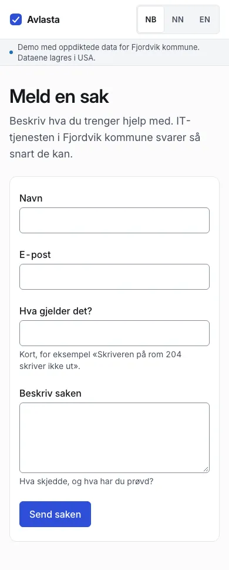

Slik virker Avlasta
En ansatt melder en sak, servicedesken løser den, og alle ser hvor saken står. Her er det som virker i demoen i dag, og det som kommer etter hvert.
En sak fra start til slutt, slik den virker i demoen i dag
Alt under kan du gjøre selv i demoen. Fjordvik kommune og personene er oppdiktet.
Den ansatte melder saken
I portalen skriver hun hva det gjelder og hva som skjedde. Det tar under ett minutt, også på mobilen.
Saksnummer med en gang
Hun får en kvittering med saksnummer, som hun kan vise til hvis hun vil spørre om saken.
Saken ligger i innboksen
Saksbehandleren ser nye saker øverst, med melder, status og når saken kom inn.
Svar og løs
Saksbehandleren svarer melderen eller skriver et internt notat, og markerer saken som løst.



Hva som finnes, og hva som kommer
Vi lover bare det som er bygget. Det som er merket «Kommer», er planlagt, men ikke i demoen ennå.
- Melde sak i portalenI demoen nå
Ansatte melder saken fra mobil eller PC med en kort beskrivelse, får saksnummer med en gang og følger saken under «Mine saker».
- Svar før saken sendesI demoen nå
Portalen viser vanlige svar fra kunnskapsbasen og kjente feil før den ansatte sender saken.
- Innboks og saksbildeI demoen nå
Saksbehandleren ser nye, egne og ventende saker med frist, svarer melderen eller skriver internt notat, og løser saken.
- E-post inn og utI demoen nå
En e-post blir sak på sekunder, og svarene går ut som e-post. I demoen går alt til en demopostkasse, så ingen e-post sendes ut.
- Forslag fra AII demoen nå
Forslag til hvor saken skal sorteres, med «Hvorfor». Språkmodellen Claude lager forslaget når AI svarer, ellers faste regler, og merket sier hvilken. Saksbehandleren bruker eller avviser. Oppsummering og svarutkast er bygget og kommer i demoen.
- Rapporter til ledelsenI demoen nå
Lederflaten viser saker inn og løst, frister, åpne saker per kø og en ukesrapport.
- Bokmål, nynorsk og engelskI demoen nå
Portalen og arbeidsplassen kan brukes på alle tre språkene.
- VerdiregnskapDelvis
Lederflaten viser hvor mye av sakene Avlasta kunne tatt. Hvor mye tid systemet faktisk tok unna, kommer.
- AI som utfører vanlige oppgaverKommer
For eksempel tilgang og passord. Du ser hva som vil skje før noe skjer, og kan angre etterpå.
- Flere kommuner i én løsningKommer
Egen portal, egne frister og egen rapport per kommune, med felles køer.
Slik bruker Avlasta AI
AI er slått på i demoen. Språkmodellen Claude fra Anthropic foreslår hvor saken skal sorteres. Svarer ikke språkmodellen, lager faste regler forslaget, og merket sier «Forslag fra regler». Dette er reglene vi bygger etter.
Forslag med kilde
AI foreslår, saksbehandleren bestemmer. Hvert forslag viser hva det bygger på.
Se før det skjer
Det som endrer noe, vises først som en forhåndsvisning. Etterpå kan det angres.
Alt blir logget
Alt AI har gjort, står i en logg virksomheten kan lese.
Dere bestemmer
AI kan slås av, funksjon for funksjon. Avlasta virker uten.
AI er inkludert i prisen, uten måler og uten ekstra faktura. AI skal ikke brukes til å vurdere, rangere eller profilere ansatte.
Slik prøver du demoen
- Åpne demoen og velg «Ansatt som trenger hjelp». Beskriv en sak i portalen. Før du sender, ser du vanlige svar og kjente feil.
- Gå tilbake og velg «Behandler i servicedesken». Da er du Sara i første linje. Finn saken din i innboksen, se om det står et forslag til sortering, svar og løs saken.
- Vil du prøve e-post, åpne «Om demoen» og velg «Send en test-e-post». E-posten blir en sak, og svaret kommer tilbake til demopostkassen.
- Velg «Leder» for å se tallene for uken, eller «Start veiledet tur» for en tur på tre minutter.
Ikke skriv ekte personopplysninger i demoen. Det du skriver, kan bli sett av andre. Trinn for trinn står i hjelpesenteret.